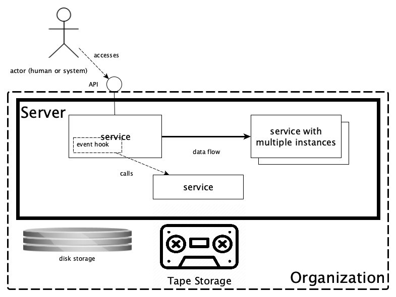

Data Station architecture¶
Overview¶
This document gives an overview of the Data Station architecture. The schema below displays the components of a Data Station and how they relate to each other. The notation used is not a formal one and is intended to be self-explanatory. To the extent that it is not, you might want to consult the legend that is included at the end of this page.
{kind=link}
Actors¶
- Data Station User - a user of the Data Station, typically a customer who downloads or deposits data.
- Data Manager - a user with special privileges, who curates and publishes datasets submitted for review by a user.
- SWORD2 Client - a software client that interacts with the DANS SWORD2 Service to deposit datasets.
Components¶
Dataverse¶
"The Dataverse Project is an open source web application to share, preserve, cite, explore, and analyze research data."
In the Data Station this repository system is used for depositing, storing and disseminating datasets, as well as creating long-term preservation copies of those datasets.
Workflows¶
Dataverse provides event hooks that allow to configure workflows to run just before and after a publication event. These
workflows can have multiple steps. A step can be implemented as part of Dataverse or as an external service. The
following microservices are configured to run as PrePublishDataset workflow steps:
The following microservices are candidates to become part of the PrePublishDataset workflow in the future:
The RDA Bag Export flow step is implemented in Dataverse and is used to export an RDA compliant bag (also a "Dataset
Version Export" or DVE) for each dataset version after publication (i.e. in the PostPublishDataset workflow). This
exported bag is then picked up by dd-transfer-to-vault.
| Docs | Code |
|---|---|
| Dataverse | https://github.com/IQSS/dataverse |
| Workflows | Part of the Dataverse code base |
dd-sword2¶
DANS implementation of the SWORD v2 protocol for automated deposits.
| Docs | Code |
|---|---|
| dd-sword2 | https://github.com/DANS-KNAW/dd-sword2 |
| dd-dans-sword2-examples | https://github.com/DANS-KNAW/dd-dans-sword2-examples |
dd-dataverse-authenticator¶
A proxy that authenticates clients on behalf of Dataverse, using the basic auth protocol or a Dataverse API token. It is used by dd-sword2 to authenticate its clients by their Dataverse account credentials.
| Docs | Code |
|---|---|
| dd-dataverse-authenticator | https://github.com/DANS-KNAW/dd-dataverse-authenticator |
dd-ingest-flow¶
Service for ingesting deposit directories into Dataverse.
| Docs | Code |
|---|---|
| dd-ingest-flow | https://github.com/DANS-KNAW/dd-ingest-flow |
dd-validate-dans-bag¶
Service that checks whether a bag complies with DANS BagIt Profile v1. It is used by dd-ingest-flow to validate bags that are uploaded via dd-sword2.
dd-manage-deposit¶
Service that manages and maintains information about deposits in a deposit area.
| Docs | Code |
|---|---|
| dd-manage-deposit | https://github.com/DANS-KNAW/dd-manage-deposit |
dans-datastation-tools¶
Command line utilities for Data Station application management.
| Docs | Code |
|---|---|
| dans-datastation-tools | https://github.com/DANS-KNAW/dans-datastation-tools |
dd-virus-scan¶
A service that scans all files in a dataset for virus using clamav and blocks publication if a virus is found.
| Docs | Code |
|---|---|
| dd-virus-scan | https://github.com/DANS-KNAW/dd-virus-scan |
dd-vault-metadata¶
A service that fills in the "Vault Metadata" for a dataset version. These metadata will be used later on by dd-transfer-to-vault to catalogue the long-term preservation copy of the dataset version when it is stored on tape.
| Docs | Code |
|---|---|
| dd-vault-metadata | https://github.com/DANS-KNAW/dd-vault-metadata |
Skosmos¶
A thesaurus service developed by the National Library of Finland. It is used to serve the external controlled vocabulary fields.
| Docs | Code |
|---|---|
| Skosmos | https://github.com/NatLibFi/Skosmos |
dd-transfer-to-vault¶
Service for preparing Dataset Version Exports for storage in the DANS Data Vault. This includes validation, aggregation into larger files and creating a vault catalog entry for each export.
| Docs | Code |
|---|---|
| dd-transfer-to-vault | https://github.com/DANS-KNAW/dd-transfer-to-vault |
dd-vault-catalog¶
Service that manages a catalog of all Dataset Version Exports in the DANS Data Vault. It will expose a summary page for each stored dataset.
| Docs | Code |
|---|---|
| dd-vault-catalog | https://github.com/DANS-KNAW/dd-vault-catalog |
dd-data-vault¶
Interface to the DANS Data Vault for depositing and managing Dataset Version Exports.
| Docs | Code |
|---|---|
| dd-data-vault | https://github.com/DANS-KNAW/dd-data-vault |
dd-data-vault-cli¶
Provides the data-vault command line tool for interacting with the DANS Data Vault.
| Docs | Code |
|---|---|
| dd-data-vault-cli | https://github.com/DANS-KNAW/dd-data-vault-cli |
BRI-GMH¶
The NBN resolver service operated by DANS in cooperation with the Koninklijke Bibliotheek. It resolves NBN persistent identifiers to their current location. The resolver is hosted at https://persistent-identifier.nl/.
| Docs and code |
|---|
| NBN |
| https://github.com/DANS-KNAW/gmh-registration-service |
| https://github.com/DANS-KNAW/gmh-resolver-ui |
| https://github.com/DANS-KNAW/gmh-meresco |
DANS Data Vault¶
The DANS long-term preservation archive. It is implemented as an array of OCFL repositories, stored in DMF TAR files on tape. Each TAR file represents a layer. If the layers are extracted to disk in the correct order, the result is an OCFL repository. For more details see the docs on the Data Vault internal interface.
| Docs |
|---|
| SURF Data Archive |
| OCFL |
| Data Vault internal interface |
Libraries¶
The components mentioned above use many open source libraries. A couple of these are developed by DANS and are available on GitHub.
Schema Legend¶
